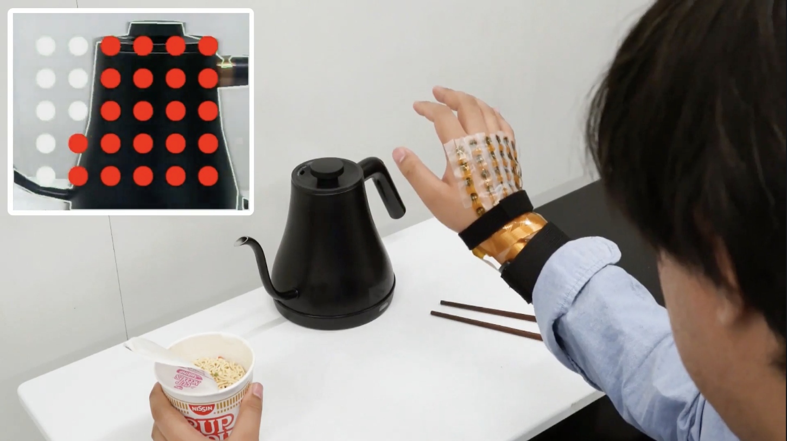

Sensory substitution devices enable users to perceive visual information through other modalities, such as touch. However, most existing devices place the camera at the user's eyes (head-mounted), which limits the ability to coordinate manual interactions. We propose "seeing and feeling" from the hand's perspective to enhance the flexibility and expressivity of sensory substitution. To this end, we engineered a back-of-the-hand electrotactile display that renders tactile images from a wrist-mounted camera, allowing users to feel objects while reaching and hovering. In a user study with sighted and blind or low-vision participants, we compared our hand-centered perspective against traditional head-mounted views in manipulation tasks (e.g., handling bottles, soldering). Results indicate that while both perspectives yield comparable performance, participants preferred the flexibility of the hand's perspective, which supported more ergonomic object manipulation strategies.